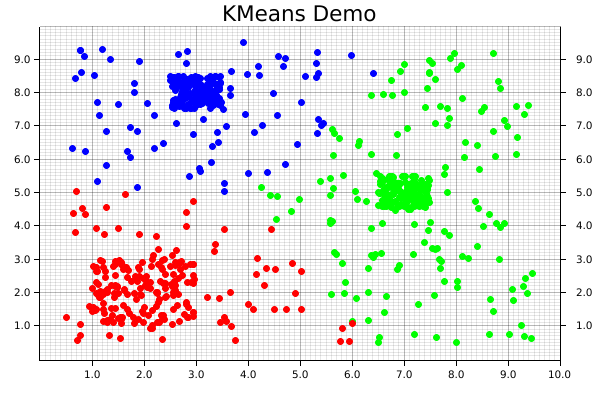

Chapter 1
A simple demonstration of latex and gnuplot integration into mdbook.
This is a test to Figure 1.3 blub.
We should reference this [1] and inline math should also work and this Eq. (1.2) .
# Chapter 1
A simple demonstration of latex and gnuplot integration into `mdbook`.
<figure id="hyperplane" class="figure"><object data="assets/dee8de7ccbf9223918d21410.svg" type="image/svg+xml"/></object><figcaption>Figure 1.3 Influence of an outlier to the seperating hyperplane, note that a single support vector changes the border completely</figcaption></figure>
This is a test to
<a class="fig_ref" href='#hyperplane'>Figure 1.3</a>
blub.
<div id="svm" class="equation"><div class="equation_inner"><object data="assets/d36d2f91a62a9e32d4bdb7d7.svg" type="image/svg+xml"></object></div><span>(1.2)</span></div>
<figure id="contour" class="figure"><object data="assets/e9ea986c569b3a41be529169.svg" type="image/svg+xml"/></object><figcaption>Figure 1.4 Contour test plot</figcaption></figure>
We should reference this
<a class="bib_ref" href='bibliography.html#legendreintegral'>[1]</a>
and inline math
<object class="equation_inline" data="assets/de566924d07db43d343b3454.svg" type="image/svg+xml"></object>
should also work and this
<a class="equ_ref" href='#svm'>Eq. (1.2)</a>
.
Introduction to Machine Learning with Rust
What is this book for?
This book aims to provide an accessible introduction to machine learning and data science in the Rust ecosystem. Each chapter will have the description of an algorithm, and walk through a code example from start to finish.
Who is this book for?
This book is written with two primary audiences in mind: developers who are familiar with machine learning and want to write their code Rust, and developers who are familiar with Rust and want to do some machine learning.
In both cases, we generally assume a basic level of understanding of the Rust programming language, although mastery is certainly not required! If you're brand new to the language, it's suggested to start off by reading The Rust Programming Language, then returning when you feel a little more comfortable. In particular, it's worth reviewing the sections on ownership, error handling, and functional features. Perhaps just as importantly as Rust's syntax, a familiarity with the library/crates ecosystem and documentation practices will prove very valuable. Machine learning in many cases sits near the top of the stack; especially when one is working with data, there are usually several layers of code beneath what the top one is doing. That's one of the benefits of working in Rust; these lower layers are often also written in Rust, which makes the abstraction more transparent and empowers developers to dig fearlessly into the underlying aspects of these programs.
Conversely, we don't assume an in-depth knowledge of machine learning (i.e. mathematical familiarity of the field). Some familiarity with the algorithms may be helpful, but the descriptions and code contained in here should help to build a foundation of some of these topics.
How to use this book
Each chapter's code sample will be available in its entirety in the code/ directory, and can be run independently of the book. For example, to run the entirety of the code example for the KMeans algorithm, the steps would look like the following:
user@computer:~/rust-ml/book cd code/
user@computer:~/rust-ml/book/code cargo run --release --example kmeans
An additional note
Like much of Rust, many of the libraries in this ecosystem empower people to write code that they might otherwise not feel able to write otherwise. Machine learning provides a really interesting and useful set of tools. That is a great benefit! However, as the saying goes, with great power comes great responsibility. This means that it is the responsibility of each developer individually, and the community as a whole, to make sure that the code we write is not being used in harmful ways and make ethical decisions surrounding our work.
As a start, we suggest making yourself familiar with some of the resources that have been collected by the Institute for Ethical Machine Learning here.
Getting Started With The K-Means Clustering Algorithm
What is KMeans?
KMeans is one of the most common clustering algorithms, where a set of unlabeled data points are grouped into a set of clusters such that each data point is part of the cluster with the centroid nearest to itself.
The centroid of a cluster is calculated as the mean, or average, of the points assigned to that cluster. The linfa crate provides an implementation of the standard algorithm for this process, known as "Lloyd's algorithm."
KMeans is_iterative_, meaning that it progressively refines the points assigned to each cluster, and therefore a new centroid for that cluster (leading to new points being assigned to it) during each successive iteration. At a high level, there are three main steps to the algorithm:
- Initialisation: Choose our initial set of centroids--this can happen randomly or be set by the user, but the number of clusters/centroids is always defined ahead of time in KMeans
- Assignment: Assign each observation to the nearest cluster (minimum distance between the observation and the cluster's centroid);
- Update: Recompute the centroid of each cluster.
Steps 2 and 3 are repeated until the location of the centroid for each cluster converges.
Using KMeans with linfa-clustering
First, we'll start off by importing the dependencies, which can be found in the Cargo.toml file in the code/ folder. Note that we need to include both the overall linfa crate, which will provide some of the structuring, as well as the actual KMeans algorithm from the linfa-clustering crate.
#![allow(unused_variables)] fn main() { // Import the linfa prelude and KMeans algorithm use linfa::prelude::*; use linfa_clustering::KMeans; // We'll build our dataset on our own using ndarray and rand use ndarray::prelude::*; use rand::prelude::*; // Import the plotters crate to create the scatter plot use plotters::prelude::*; }
After importing the dependencies, we'll start off by creating a set of data points that we want to cluster. This data could be imported from somewhere else through a library like ndarray_csv or polars, but we'll create it manually here for this example. The most important thing is that we end up with an ndarray Array2<f32> data structure.
For this dataset, we'll get started with a few squares filled with random points, in which each square is defined by a center point, edge length, number of points contained within it's boundaries. Each of those squares should end up having a high-enough density to be the center point of one of our clusters. We'll also create a large, sparse set of points covering all over them to act as background noise, which will help to visually demonstrate how disparate points get assigned to clusters.
Since each of these squares is being created individually, we'll then need to consolidate them along (along the y-axis) by using the ndarray::stack() function, which concatenates arrays along the specified axis.
#![allow(unused_variables)] fn main() { let square_1: Array2<f32> = create_square([7.0, 5.0], 1.0, 150); // Cluster 1 let square_2 = create_square([2.0, 2.0], 2.0, 150); // Cluster 2 let square_3 = create_square([3.0, 8.0], 1.0, 150); // Cluster 3 let square_4 = create_square([5.0, 5.0], 9.0, 300); // A bunch of noise across them all let combined_squares = ndarray::stack( Axis(0), &[ square_1.view(), square_2.view(), square_3.view(), square_4.view(), ], ) .expect("An error occurred while stacking the dataset"); }
Now that we have our data, we'll convert it into the form that linfa uses for training and predicting model, the Dataset type.
In order to actually build the KMeans algorithm, there are two additional things that we'll need: the number of clusters we're expecting, and a random number generator (RNG). While it is possible to manually define the starting location of each centroid, we often use KMeans in situations where we don't know much about the data ahead of time, so randomly creating them can work just as well. This represents one of the trade-offs of using KMeans; it will always converge towards a minima, it's just not guaranteed that is will be a global minima.
Using these variables, we can build our model, and set a few additional parameters that may be useful along the way. In this case, those parameters are the maximum number of iterations that we'll allow before stopping, and the tolerance in terms of distance between each iteration that we'll allow before considering our fit to have converged. Finally, we'll run the fit() method against the dataset.
#![allow(unused_variables)] fn main() { let dataset = DatasetBase::from(combined_squares); let rng = thread_rng(); // Random number generator let n_clusters = 3; let model = KMeans::params_with_rng(n_clusters, rng) .max_n_iterations(200) .tolerance(1e-5) .fit(&dataset) .expect("Error while fitting KMeans to the dataset"); }
In order to actually get the cluster assignments for the original dataset, however, we'll need to actually run the model against the dataset it was trained on. This may seem a little counter-intuitive, but this two-step process of fit() and predict() helps to make the overall modelling system more flexible.
Calling the predict() method will also convert the dataset variable from a single Array2<f32> in a pair of arrays (records, targets): (Array2<f32>, Array1<f32>).
#![allow(unused_variables)] fn main() { let dataset = model.predict(dataset); println!("{:?}", dataset.records.shape()); println!("{:?}", dataset.targets.shape()); }
At this point, we have all of our points and their assigned clusters, and we can move onto doing some data visualization! The initial step in that process is setting up the backend, of which the plotters library has several. We'll use the BitMapBackend, which will save the chart we create into a .png image file with a specified name and size.
A ChartBuilder data structure will be laid on top of the backend, which will actually be responsible for the placing of chart elements like labels, margins, grids, etc. which are all defined by the user. In this case, we want to graph on a two-dimensional Cartesian plane, with both the x- and y-axes set to a range of [0..10].
#![allow(unused_variables)] fn main() { let root = BitMapBackend::new("../src/kmeans.png", (600, 400)).into_drawing_area(); root.fill(&WHITE).unwrap(); let x_lim = 0.0..10.0f32; let y_lim = 0.0..10.0f32; let mut ctx = ChartBuilder::on(&root) .set_label_area_size(LabelAreaPosition::Left, 40) // Put in some margins .set_label_area_size(LabelAreaPosition::Right, 40) .set_label_area_size(LabelAreaPosition::Bottom, 40) .caption("KMeans Demo", ("sans-serif", 25)) // Set a caption and font .build_cartesian_2d(x_lim, y_lim) .expect("Couldn't build our ChartBuilder"); }
The final part of this process consists of actually adding in the mesh, and setting up an area for plotting each of the individual data points.
#![allow(unused_variables)] fn main() { ctx.configure_mesh().draw().unwrap(); let root_area = ctx.plotting_area(); }
Before starting to plot, however, we want to make sure that the data we're going to plot is the right shape; a two-dimensional dataset with two columns. Fortunately, a simple helper function has been written to double-check if that is true.
#![allow(unused_variables)] fn main() { // check_array_for_plotting(dataset: &Array2<f32>) -> bool {} check_array_for_plotting(&dataset.records); // Panics if that's not true }
We're now ready to begin plotting! It is possible to plot elements as part of a series, but it's easy (and still quite fast) to do each individually. First, the coordinates from each element get pulled from the dataset.records array. Those coordinates are then used to create a dot, where we pattern-match on the point's assigned cluster from dataset.targets to choose the color.
Notice that the pattern-matching here is exhaustive! For KMeans, this isn't important, because each point is automatically assigned to a cluster. However, that's not necessarily true for all clustering algorithms, where some less-important data points can be left behind, so it's good practice to make sure that we consider that possibility. Finally, we'll actually draw the chart element we created using that information onto the chart area.
#![allow(unused_variables)] fn main() { for i in 0..dataset.records.shape()[0] { let coordinates = dataset.records.slice(s![i, 0..2]); let point = match dataset.targets[i] { 0 => Circle::new( (coordinates[0], coordinates[1]), 3, ShapeStyle::from(&RED).filled(), ), 1 => Circle::new( (coordinates[0], coordinates[1]), 3, ShapeStyle::from(&GREEN).filled(), ), 2 => Circle::new( (coordinates[0], coordinates[1]), 3, ShapeStyle::from(&BLUE).filled(), ), // Making sure our pattern-matching is exhaustive _ => Circle::new( (coordinates[0], coordinates[1]), 3, ShapeStyle::from(&BLACK).filled(), ), }; root_area .draw(&point) .expect("An error occurred while drawing the point!"); } }
And that's it! Note that there's not separate step for saving the final product, since that's automatically taken care of by our backend. The final visualization of the clusters created by the KMeans algorithm will look like the following:

Bibliography
- [AA09]
- Boaz Rafaely Amir Avni.Interaural cross correlation and spatial correlation in a sound field represented by Spherical Harmonics.In Ambisonics Symposium, 2009.
- [And09]
- Andeggs.3d spherical coordinates, 2009.[Online; accessed August 20, 2017].
- [Aud16]
- Audio Research Lab.Subjective Training and Evaluation Program (STEP), 2016.
- [Boa15]
- Rafaely Boaz.Fundementals of Spherical Array Processing.Springer, 2015.
- [Bue01]
- Thomas Buelow.Spherical diffusion for surface smoothing and denoising, 2001.
- [CGBX13]
- Samuel W. Clapp, Anne E. Guthrie, Jonas Braasch, and Ning Xiang.Using Ambisonics to reconstruct measured soundfields.In Audio Engineering Society Convention 135, 2013.
- [Che03]
- Qing Chen.Evaluation of ocr algorithms for images with different spatial resolutions and noises, 2003.
- [CNS11]
- E. Deleflie C. Nachbar, F. Zotter and A. Sontacchi.Ambix - a suggested ambisonics format.In Ambisonics Symposium, 2011.
- [Dan03]
- Jerome Daniel.Spatial sound encoding including near field effect: Introducing distance coding filters and a viable, new Ambisonic format.In Audio Engineering Society Conference: 23rd International Conference: Signal Processing in Audio Recording and Reproduction, 2003.
- [DHJM98]
- P. J. Kostelec D.M. Healy Jr., D. Rockmore and Sean S. B. Moore.FFTs for the 2-sphere - improvements and variation.Journal of Fourier Analysis and Applications, 9(4):341–385, 1998.
- [DiD82]
- A. R. DiDonato.Recurrence relations for the indefinite integrals of the associated legendre functions.Mathematics of Computation, 38(158):547–551, 1982.
- [Eng87]
- Heinz W Engl.On the choice of the regularization parameter for iterated tikhonov regularization of iii-posed problems.Journal of Approximation Theory, 49(1):55–63, 1987.
- [FZP13]
- Matthias Frank Franz Zotter and Hannes Pomberger.Comparison of energy-preserving and all-round Ambisonic decoders.In Fortschritte der Akustik, AIA-DAGA, 2013.
- [HHKP15]
- Jürgen Herre, Johannes Hilpert, Achim Kuntz, and Jan Plogsties.MPEG-H audio—the new standard for universal spatial/3d audio coding.J. Audio Eng. Soc, 62:821–830, 2015.
- [HS96]
- R. H. Hardin and N. J. A. Sloane.Mclaren's improved snub cube and other new spherical designs in three dimensions.Discrete Computational Geometry, 15:429–441, 1996.
- [HS17]
- Nara Hahn and Sascha Spors.Further investigations on the design of radial filters for the driving functions of Near-Field Compensated Higher-Order Ambisonics.In Audio Engineering Society Convention 142, 2017.
- [Pol05]
- M. A. Poletti.Three-dimensional surround sound systems based on Spherical Harmonics.J. Audio Eng. Soc, 53(11):1004–1025, 2005.
- [Ray07]
- Lord Rayleigh.On our perception of sound direction.13(74):214–232, 1907.
- [SA14]
- Davide Scaini and Daniel Arteaga.Decoding of higher order ambisonics to irregular periphonic loudspeaker arrays.In Audio Engineering Society Conference: 55th International Conference: Spatial Audio, Aug 2014.
- [SN11]
- J.J. Sakurai and J. Napolitano.Modern Quantum Mechanics.Pearson, 2011.
- [vba96]
- DSP Approach to Multichannel Audio Mixing. ICMC, 1996.
- [You09]
- Peter Young.Helmholtz's and laplace's equations in spherical polar coordinates: Spherical harmonics and spherical Bessel functions, 2009.
- [ZF12]
- Franz Zotter and Matthias Frank.All-round Ambisonic panning and decoding.J. Audio Eng. Soc, 60(10):807–820, 2012.
- [ZP10]
- Franz Zotter and Hannes Pomberger.Ambisonic decoding with and without Mode-Matching: A case study using the hemisphere.2010.
{kind=link}